El deck
Un rincón para frenar y disfrutar sin apuro.
Cabañas para 2 a 4 huéspedes en Tigre centro, a 200 metros del río y de la ciudad.
Un espacio cálido, con deck y galería techada. Mirá sus rincones sin recorrer una galería interminable.
Un rincón para frenar y disfrutar sin apuro.

Cama doble, futón y un ambiente cómodo y funcional.
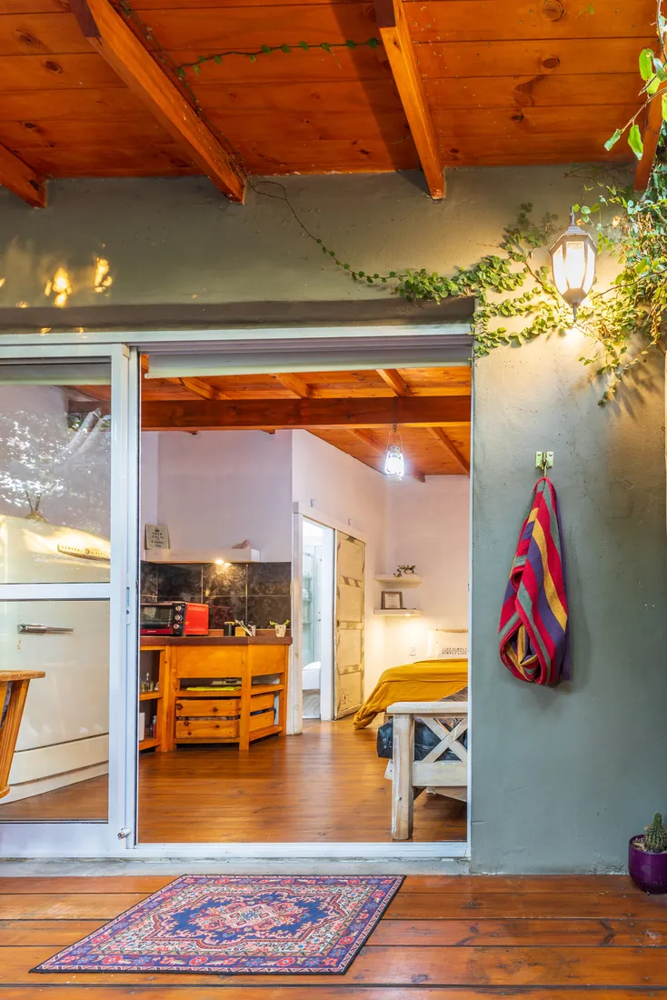
Un lugar para disfrutar incluso cuando llueve.

Un espacio pensado para bajar el ritmo.
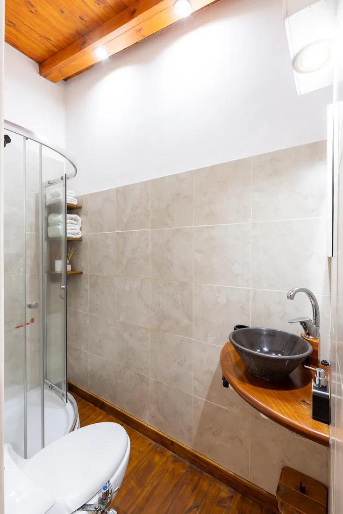
Aire frío/calor, WiFi y Smart TV con Netflix.
Una escapada tranquila con los paseos y la gastronomía de Tigre a pocos pasos.
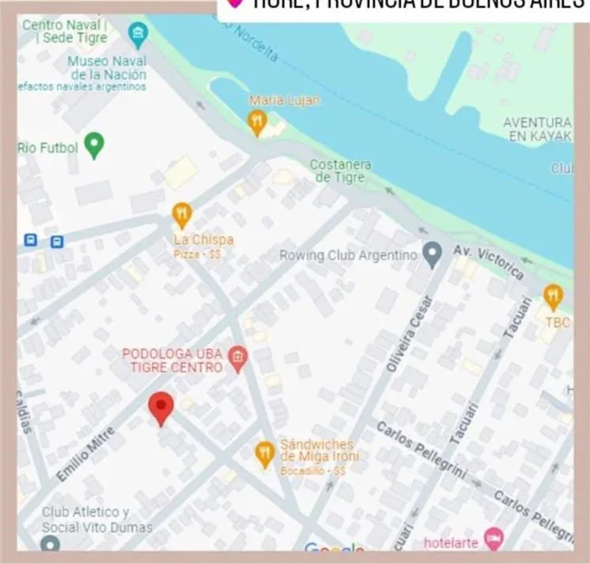
200 m de Paseo Victorica · 15 minutos caminando al Museo de Arte Tigre y al Puerto de Frutos.
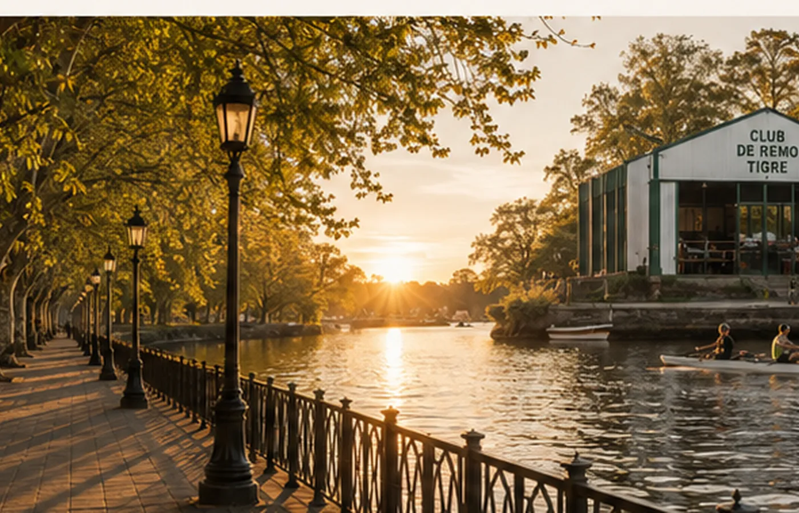
Caminar frente al río, descubrir cafés y disfrutar el atardecer.

Arte e historia a pocos minutos de Om Shanti.

Bares y restaurantes para disfrutar sin alejarte.

Después de pasear, la tranquilidad te espera.
Consultá disponibilidad real y elegí tus fechas en nuestro motor de reservas.
Spa, aventura y recorridos por Tigre. Opciones adicionales sujetas a disponibilidad.


Excursión y trekking guiado para conectar con la naturaleza.
Consultar experiencia ↗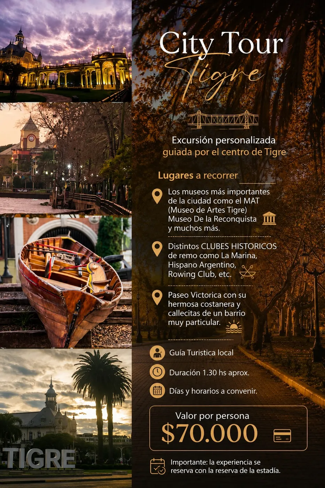
Viajes, sueños compartidos y un lugar que construimos juntos. Tocá cada etapa para conocerla.
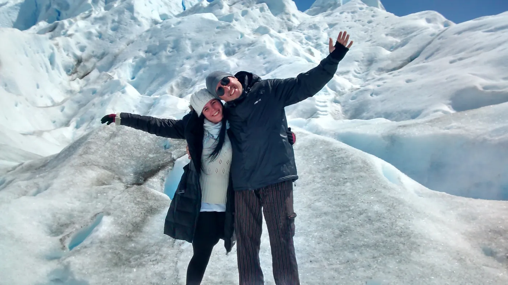
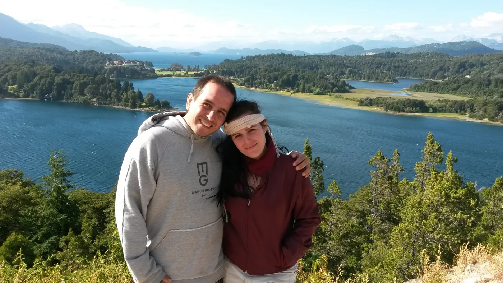
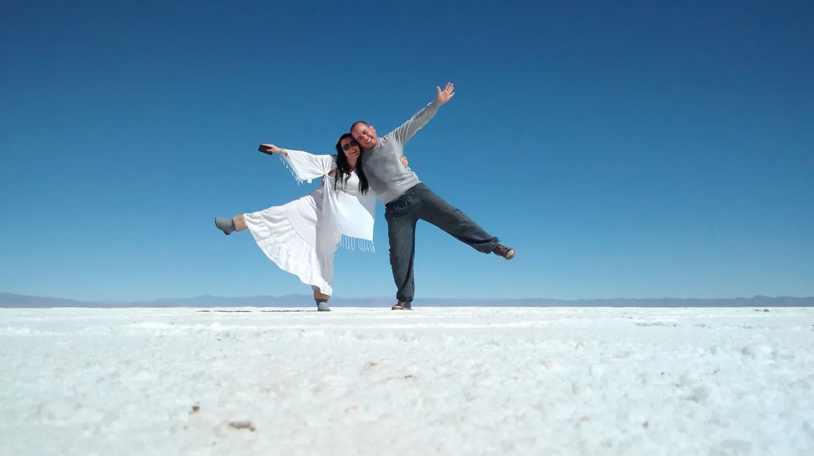
Mucho antes de imaginar Om Shanti, hubo viajes, caminos y lugares que nos fueron marcando. Sin saberlo, fuimos guardando pequeños detalles: la forma en que nos recibían, los espacios donde nos sentíamos cómodos y esa sensación de sentirse como en casa aun estando lejos.
Ver historia y fotos ↗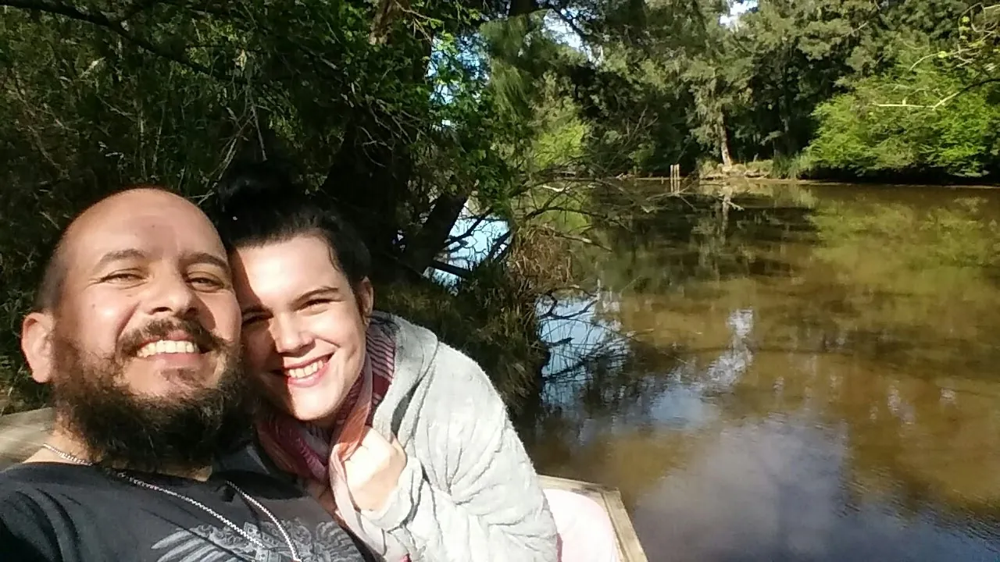
Entre mates a orillas del río Reconquista, esa idea que venía creciendo empezó a tomar forma: crear un lugar donde pudiéramos recibir a otros con la misma calidez con la que a nosotros nos gustaba ser recibidos. Así empezó Om Shanti.
Ver historia y fotos ↗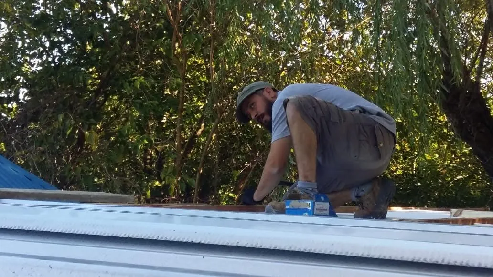
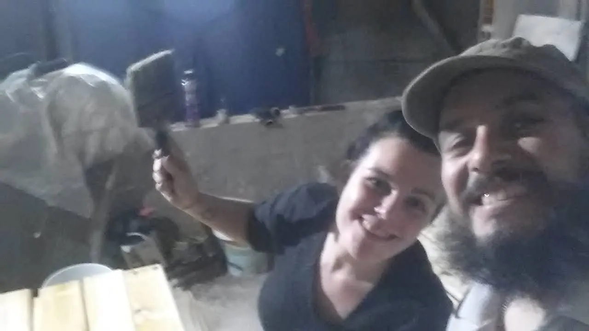

El proyecto tomó forma con trabajo propio, aprendizaje y mucha ilusión. Cada avance fue una mezcla de esfuerzo, entusiasmo y visión compartida. No queríamos solamente construir un alojamiento: queríamos darle identidad.
Ver historia y fotos ↗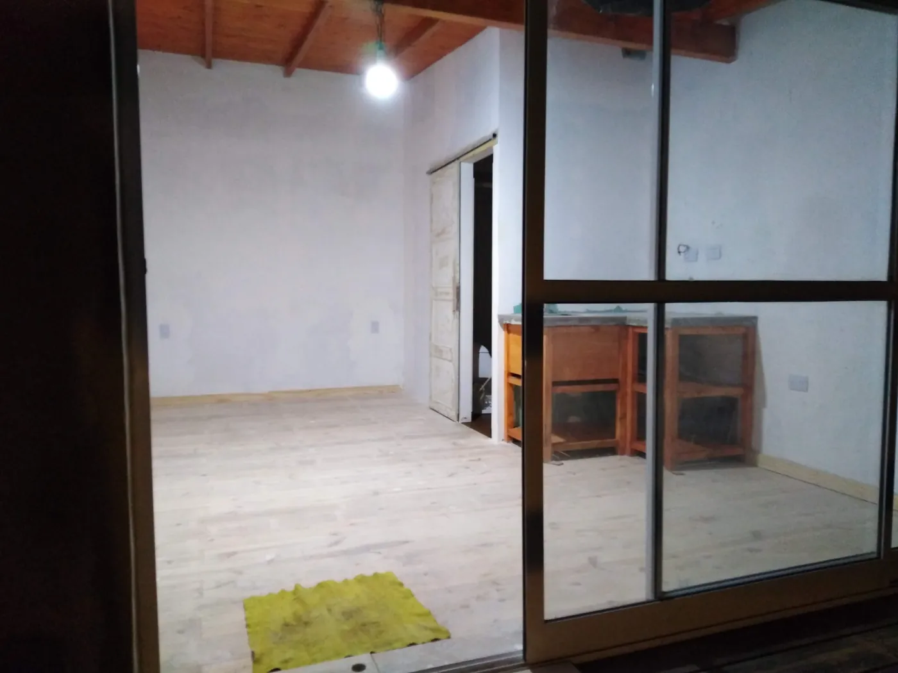
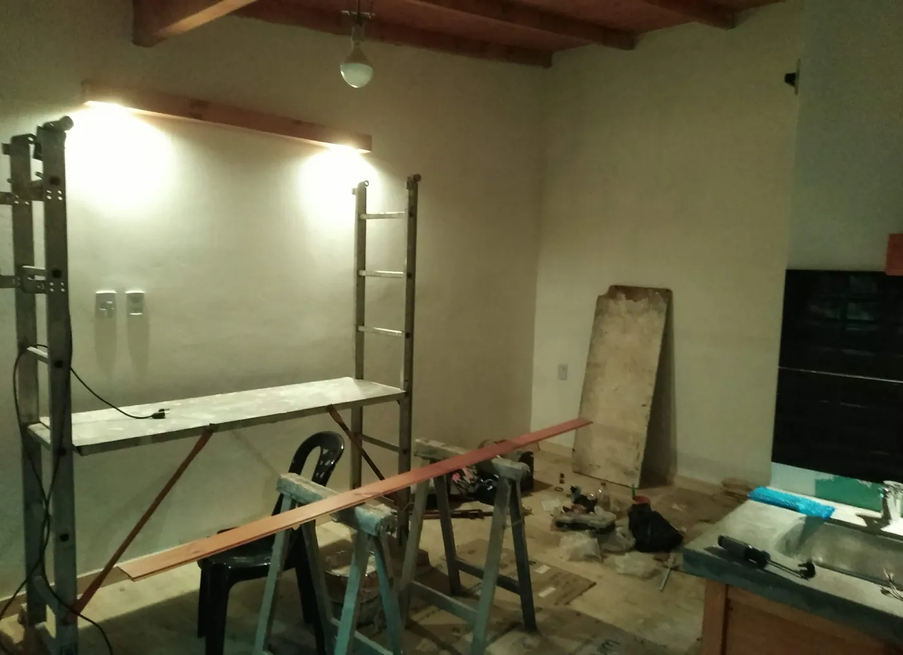
Piso, cocina, deck, carpintería, iluminación y detalles. De a poco, aquel espacio vacío fue convirtiéndose en el refugio que habíamos imaginado. Muchas de las cosas que hoy forman parte de Om Shanti nacieron literalmente de nuestras manos.
Ver historia y fotos ↗Om Shanti sigue creciendo, pero conserva la esencia del primer día: ofrecer un lugar donde bajar el ritmo, sentirse bien recibido y llevarse un lindo recuerdo de Tigre.
Ver historia y fotos ↗Sí. Para una noche con ingreso viernes, sábado o domingo, el sistema ofrece la modalidad con late checkout según disponibilidad.
Con una seña del 50% por transferencia.
Las cabañas están preparadas para 2 huéspedes y pueden alojar hasta 4 personas.
Sí, Om Shanti es pet friendly.
Estamos en Tigre centro, a unos 200 metros de Paseo Victorica. Se puede estacionar en la calle; no contamos con cochera privada.
No. El acceso es por calles urbanas, sin barro, y las cabañas cuentan con galería techada para disfrutar incluso si llueve.